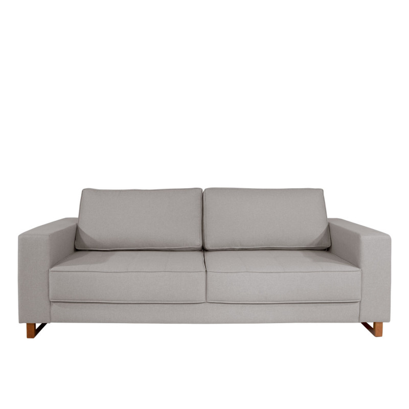
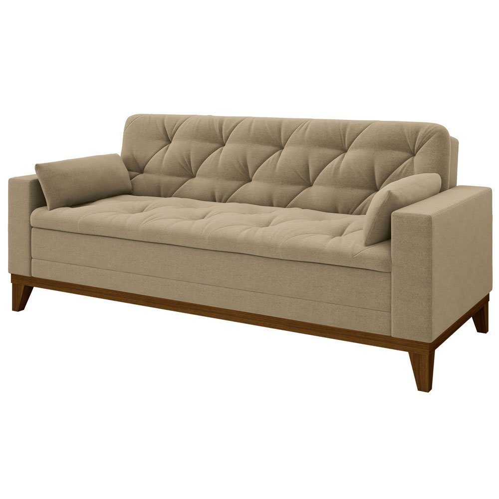
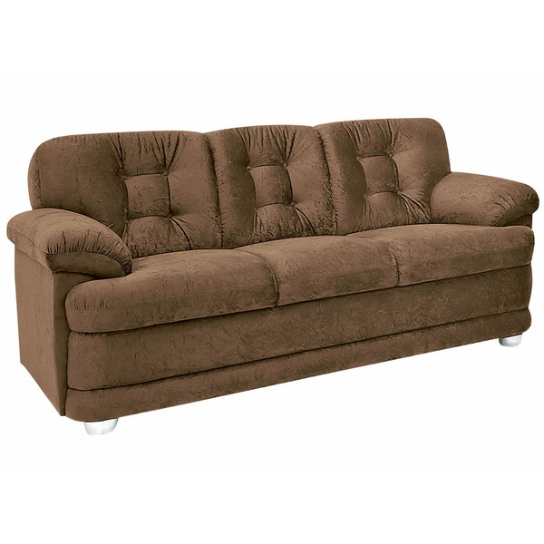
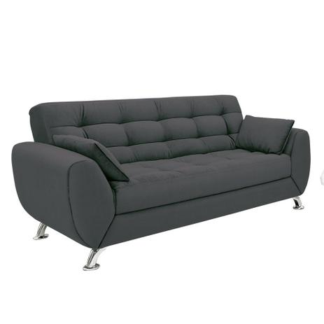
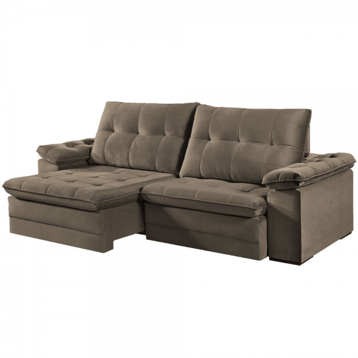
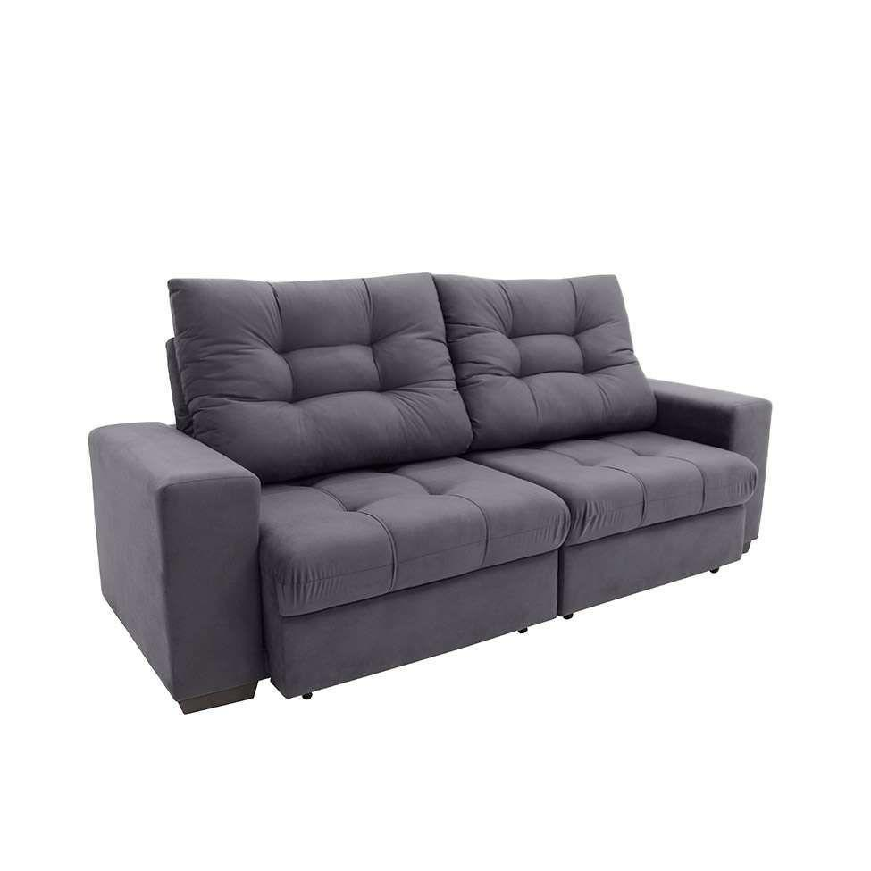

Reforma de Sofá
Como é feita a Reforma de Sofá?
Na reforma de sofá é feito um orçamento onde o cliente escolhe um tecido em nossos mostruários ou ele mesmo nos fornece o tecido de sua escolha, em seguida o sofá é desmontado e todo o tecido velho é retirado e jogado fora, as espumas são inspecionada e colocado uma nova camada ou caso necessário é trocada por completo, assim como todas as madeira também são inspecionada para ver se não tem nada quebrado, caso precise é feito um reparo e colocado um reforço, somente depois de tudo inspecionado o tecido escolhido pelo cliente é colocado deixando totalmente reformado.
Reformas de Sofá já realizadas:





